« Previous -
Version 8/9
(diff) -
Next » -
Current version
Emanuel Graf, 18 Jan 2011 08:50
Using the Cute Eclipse Plugin¶
The CUTE Eclipse plug-in integrates the CUTE C++ unit testing framework into the Eclipse CDT C/C++ integrated development environment. This plug-in provides all the important features that Java developers know from the JUnit plug-in:
Wizards to initialize and set up new tests
Test navigator with green/red bar
Diff-viewer for failing tests
This page shows how to use the CUTE Eclipse plug-in once it is installed.
Functionality¶
Create a Project¶
Select File > New > C++ Project. In the C++ Project dialog, the CUTE Eclipse plug-in provides three new C++ project wizards in addition to those that come standard with CDT:
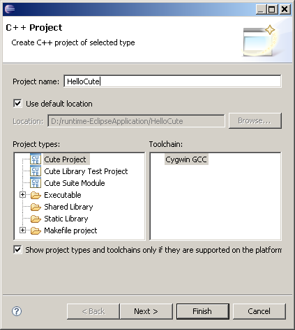
Select the type of CUTE project you want:
- Cute Project creates a standalone test project
- Cute Library Test Project asks you to specify an existing Eclipse project, and creates a unit test for that project
- Cute Suite Module asks you for a name, and creates a test suite with that name
Specify the Project name and answer the questions. The wizard creates a project with all the CUTE unit test framework source files. It sets up building using the Eclipse internal builder, so you should be able to build and execute the project.
If you did not install Boost in the standard location, you will need to specify it. Right click on the newly created CUTE project, and select Properties. In C/C++ Build, Settings, choose the Tool Settings tab. Specify the Boost include path in GCC C++ Compiler, Directories, and specify the library path and the boost_thread library name, for example, boost_thread-gcc-mt-d-1_33.
All of the wizards create a trivial test in file src/Test.cpp that will get you started. Expand this Test.cpp to create your unit test.
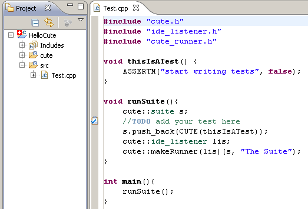
Test navigator with green/red bar¶
To build the project, select the menu Project > Build All. A Debug folder will be created after building.
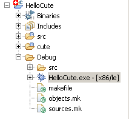
Right click on HelloCute.exe, Run As > CUTE Test
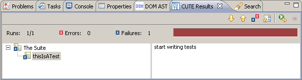
Modify Test.cpp as shown below
1 #include "cute.h"
2 #include "ide_listener.h"
3 #include "cute_runner.h"
4 #include <string>
5
6 void thisIsATest() {
7 std::string s,s2,r;
8 s="Hello";
9 s2="World";
10 r="Hello World";
11 ASSERTM("String not matching", s.append(" "+s2).compare(r)==0);
12 }
13 void runSuite(){
14 cute::suite s;
15 //TODO add your test here
16 s.push_back(CUTE(thisIsATest));
17 cute::ide_listener lis;
18 cute::makeRunner(lis)(s, "The Suite");
19 }
20
21 int main(){
22 runSuite();
23 }
The following assertion macro can be found in cute_base.h
1 ASSERTM(msg,cond)
2 ASSERT(cond)
3 FAIL()
4 FAILM(msg)
See Writing Unit Tests for details.
Diff-viewer for failing tests¶
With Test.cpp as shown below
1 #include "cute.h"
2 #include "ide_listener.h"
3 #include "cute_runner.h"
4
5 void thisIsATest() {
6 std::string s,s2,expected,actual;
7 s="Hello";
8 s2="World";
9 expected="HelloWorld";
10 ASSERT_EQUAL(expected, s.append(" \n \t "+s2));
11 }
12 void testDelta(){
13 double cx=0.1, ax=0.3;
14 ASSERT_EQUAL_DELTA(cx,ax,0.1);
15 }
16
17 void runSuite(){
18 cute::suite s;
19 //TODO add your test here
20 s.push_back(CUTE(thisIsATest));
21 s.push_back(CUTE(testDelta));
22 cute::ide_listener lis;
23 cute::makeRunner(lis)(s, "The Suite");
24 }
25
26 int main(){
27 runSuite();
28 }
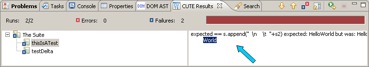
double clicking at the location of the blue arrow as shown above pops up the result comparison.
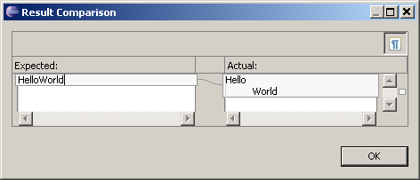
Spaces, tabs, newlines can be turned on.
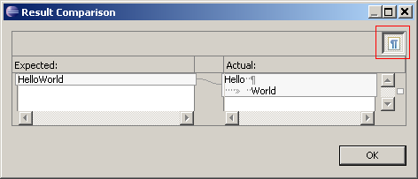
The following assertion macro can be found in cute_equals.h
1 ASSERT_EQUALM(msg,expected,actual)
2 ASSERT_EQUAL(expected,actual)
3 ASSERT_EQUAL_DELTAM(msg,expected,actual,delta)
4 ASSERT_EQUAL_DELTA(expected,actual,delta)
See Writing Unit Tests for details.
New test function¶
This template allows the insertion of new test. Place your cursor at the location where the new test function will be.
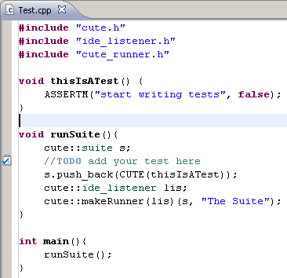
right click and select Source > New Test Function
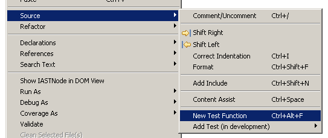
And at this point you can give the new test function a unique name.
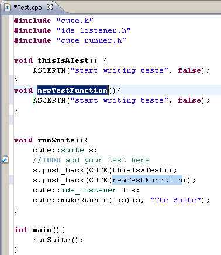
Adding existing test function to suite¶
This add the existing function into the test suite. Place your cursor anywhere along the desired function (underlined in green.) Right click Source > Add Test > Add Test function to Suite
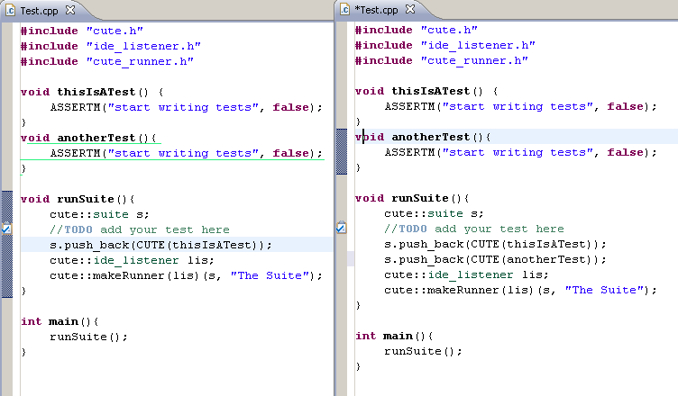
h3, Adding test functor to suite
Functor in this application is defined as : any class or struct with a public operator () that takes in zero parameters.
Place your cursor anywhere along the desired function (underlined in green.) Right click Source > Add Test > Add Test functor to Suite
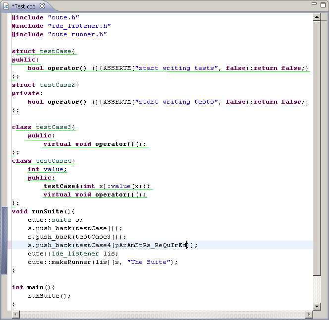
for undefined reference to `vtable for testCase4' compiler error in the above example, means that you need to specific what operator() do.
Adding test member to suite¶
A test method in a class or struct can be added. Right click Source > Add Test > Add Test Member to Suite
A class or struct method needs to be public, nonstatic, parameterless, non union.
An instance method needs to be public, nonstatic, parameterless, non union and void.
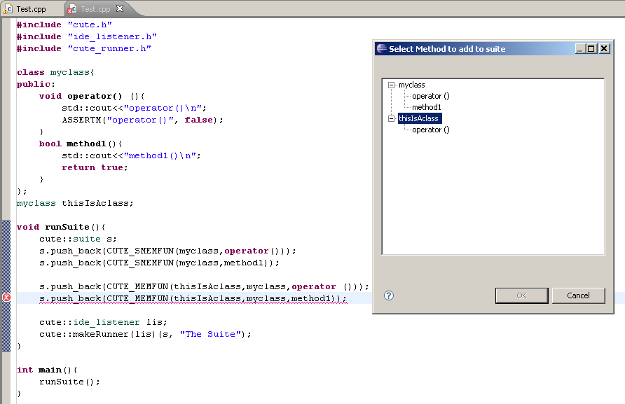
***beware there is no duplicate push_back check.
1 CUTE_MEMFUN(testobject,TestClass,memberFunction)
2 CUTE_SMEMFUN(TestClass,memberFunction)
See Theory Of Operation and Goals for details.
Wizard for creating library test project¶
Firstly, create a shared or static library project.
Ensure that the library project is opened, else it wouldn't be shown in the following step.
Next create a Cute Library Test Project
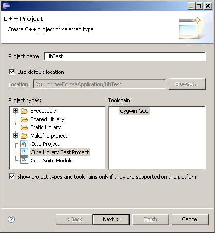
Press Next
Select the desired library project
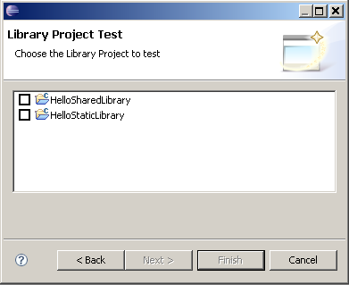
Press Next or Finish to complete the wizard
Under project properties> C/C++ Build > Settings, an one off compiler setting of -I and Linker -l -L will be set. Subsequent changes will be managed by the user.
Wizard for creating suite module project¶
A CUTE project with a custom test suite name can be created easily with this wizard. Select the Cute Suite Module project
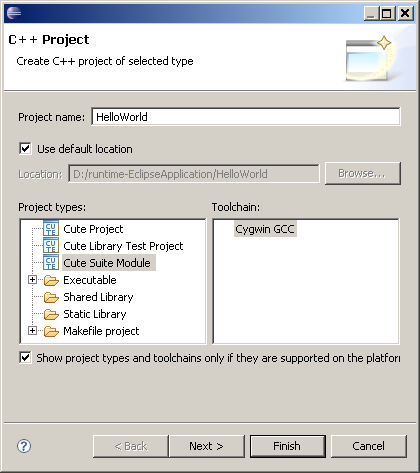
Next > Specific the suite name
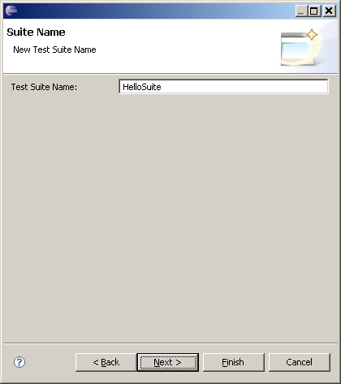
And the project with the below structure will be created.
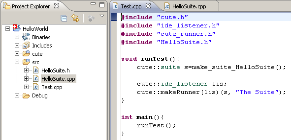
Code for HelloSuite.cpp
1 #include "cute.h"
2 #include "ide_listener.h"
3 #include "cute_runner.h"
4 #include "HelloSuite.h"
5
6 void thisIsATest() {
7 ASSERTM("start writing tests", false);
8 }
9
10 cute::suite make_suite_HelloSuite(){
11 cute::suite s;
12 s.push_back(CUTE(thisIsATest));
13 return s;
14 }
Adding a new Suite module¶
Project Explorer > select project, folder or file (.cpp or .h). right click New > Suite File
Custom source path lookup for unmanaged project¶
For a typical managed project, the makefile will reside with the executable. This information is use to derive the source codes folder. For an unmanaged project, CUTE plug-in is not able to know where the source codes folder are. Given the below directory structure.

Where the makefile is with the source files, you can specify where to look for the source codes.
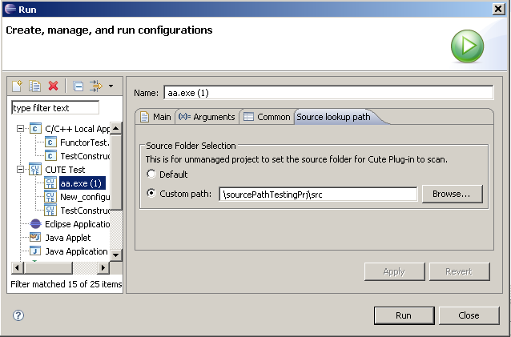
Setting environment variables for Run/Debug Configuration¶
To test a library project, we need to set the environment variables such as PATH, LD_LIBRARY_PATH or DYLD_LIBRARY_PATH. Whenever a CUTE library project reference others projects, it’s launch configuration will be appended with the others projects path.
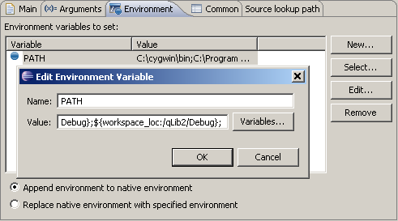
Append environment to native environmentIf the variable does not exist at the native environment, it will added. If it exist, it will be overwritten by your variable.
for example:
| current native environment path | "C:\WINDOWS\system32;C:\WINDOWS;" |
| adding a variable path | path;"d:\workspace\sharedLibraryPrj\Debug" |
| Append environment selected | |
| resultant path | "d:\workspace\sharedLibraryPrj\Debug" |
for cygwin dll development, you will need to ensure that cygwin1.dll, and the dll in development can be located within the folders in PATH. The PATH specified is in window form and not "/cygdrive/c/" form.
To see a list of dll loaded by your exe, you can use APIMON in windows 2000 resource kit.
To see a list of runtime environment variables, you can use prenv.c or mirrored file
Replace native environment with specifie environment
means only those variables entered into the above table will available.
{kind=link}
{kind=link}
{kind=link}
{kind=link}
{kind=link}
{kind=link}
{kind=link}
{kind=link}
{kind=link}
{kind=link}
{kind=link}
{kind=link}
{kind=link}
{kind=link}
{kind=link}
{kind=link}
{kind=link}
{kind=link}
{kind=link}
{kind=link}